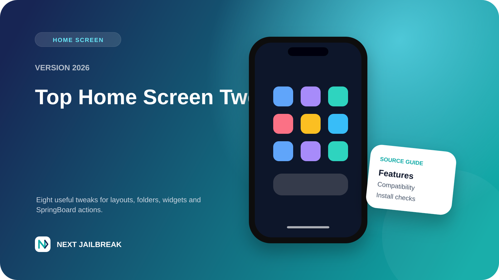
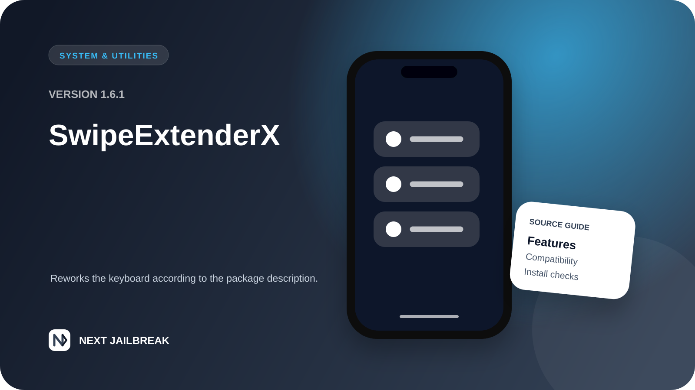
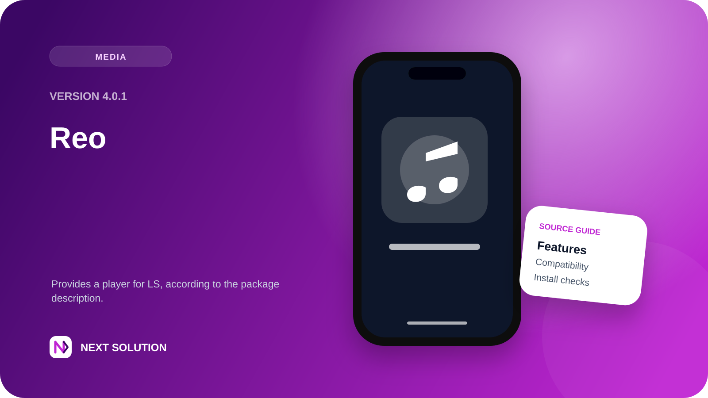
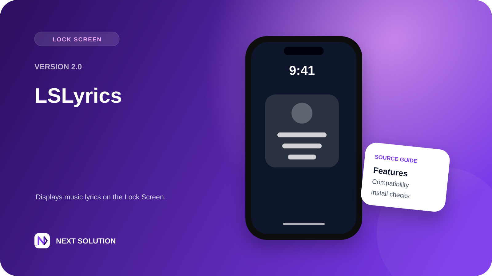
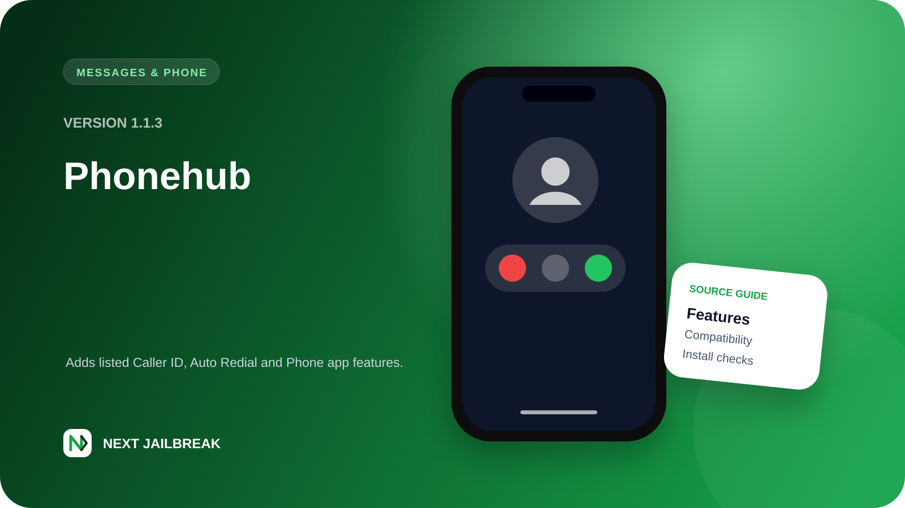

Next Home Lock 1.0.5
Double-tap empty Home Screen space to lock your iPhone. Version 1.0.5 keeps the physically verified SpringBoard method and one clean enable switch.
Read guide and downloadFind original releases, source-checked package summaries, useful roundups, complete tutorials, and rootless setup information—with direct links to original sources.
Detailed feature notes, compatibility guidance, and downloads for packages created and maintained by Next Solution.
Double-tap empty Home Screen space to lock your iPhone. Version 1.0.5 keeps the physically verified SpringBoard method and one clean enable switch.
Read guide and download
Redesign Favorites, Recents, Contacts, and Keypad with fixed saved-number suggestions, smart call filters, and the 0.4.16 stability rollback.
Read guide and downloadSource-based package articles explaining features, architecture, dependencies, and which compatibility details still need confirmation.

Compare layout editors, folder upgrades, dock tools, widget cleanup, and quick actions—with current source and compatibility notes.
See all 8 tweaks →
SwipeExtenderX 1.6.1 is a system utility tweak described as a modern remake of SwipeExpander. Review its listed requirements and installation considerations.
Read guide →
Reo 4.0.1 is an updated jailbreak tweak from Mysteryexe, described as a “Fancy Dancy player for LS.” Review its package details, dependencies, architectures, and a—
Read guide →
Review LSLyrics 2.0, its listed Lock Screen feature, architectures, dependencies, and installation checks based on the supplied package metadata.
Read guide →
Phonehub 1.1.3 is a package for the iOS Phone app with listed Caller ID engines, Auto Redial, Smart Loudspeaker, dual-SIM selection, and interface refinements.
Read guide →Long-form instructions for preparation, setup, package conversion, and troubleshooting.
Follow the palera1n process with device requirements, preparation, installation, and troubleshooting.
Read tutorial →Browse a categorized collection of useful rootless packages with repositories and installation information.
View the collection →Understand package layouts and convert older packages for modern rootless environments.
Open conversion guide →Explore the customization areas covered by Lynx 2 and the compatibility points worth checking.
Read the review →Pair the written instructions with original videos from the official channel.